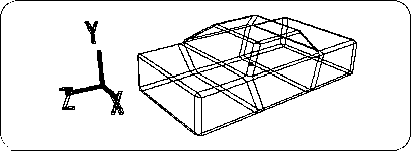
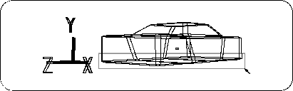
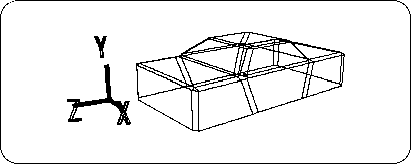
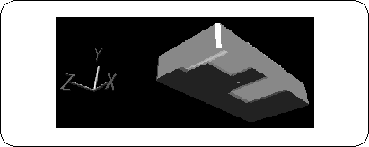

Return to previous page | Return to menu | Go to next page
To make it look like a car, let's make it a little more crusty.
First, change from TAG mode to OBJ mode.
Make sure that the car body model is selected,
[Effect] → [Rounding]
Choose. A numerical input window will appear.
Round (degree of chamfering): 0.1
And click “OK”. This will generate a chamfered model as shown below (Figure 3-15).

Here, delete the polygon on the bottom of the car body (chassis). Change to TAG mode (be sure to!) And set each point on the bottom (point where Y value is negative) to TAG in the Front window (Figure 3-16).

[Delete] → [Selection]
When is executed, the polygon surrounded by TAG is deleted (Figure 3-17).

Remember that the method of enclosing a polygon with TAG and deleting the polygon is a very frequently used technique.
Click the “SHADE ↓” part on the upper right side of the window with the left mouse button , select “Shade” in the pop-up menu that appears, and switch to the shade (simple rendering) display. Let's check the erased polygons (Figures 3-18 and 3-19).
